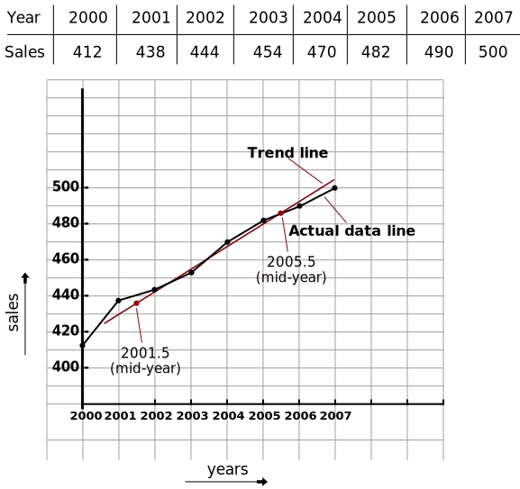
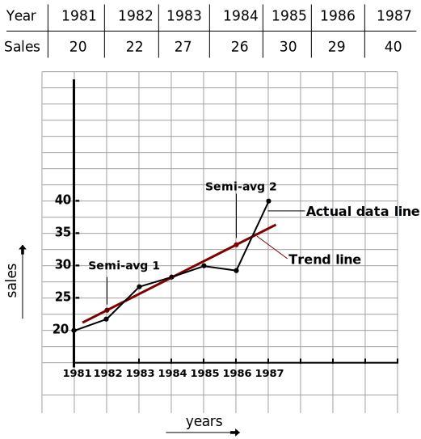
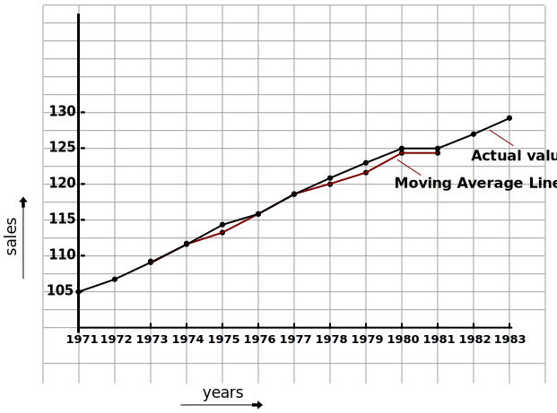

Time series
A time series is a sequence of data points recorded at regular time intervals, used to track changes over time.
A time series refers to a sequential collection of data points or observations recorded over time intervals. These intervals could be regular (daily, weekly, monthly) or irregular, depending on the nature of the data being observed.
Here's how the rest of the text could be expanded and corrected:
- Time series data is of particular interest in economics, business, and commerce, where the values of a variable are observed chronologically by days, weeks, months, quarters, or years. This type of data provides insights into trends, patterns, and relationships over time, which are crucial for decision-making and analysis.
- Time series analysis is conducted primarily for two main purposes:
- To make forecasts for the future based on historical data trends. This forecasting helps businesses and economists anticipate market trends, sales patterns, economic indicators, and other variables crucial for planning and strategy.
- To evaluate past performance and understand the dynamics of the data over time. This includes identifying seasonality, trends, cycles, and irregular fluctuations that can impact decision-making and strategy formulation.
- Applications of time series analysis are widespread:
- Economists use time series analysis to estimate figures such as national income, inflation rates, unemployment rates, and other key economic indicators. This information is vital for economic policy-making, forecasting, and understanding economic trends.
- Businesses utilize time series analysis for sales forecasting, demand planning, inventory management, financial modeling, and risk management. It helps businesses optimize operations, allocate resources efficiently, and make informed decisions.
- In natural sciences, time series analysis is used in environmental monitoring, climate modeling, geological studies, and more. It aids in understanding natural phenomena, detecting trends, and predicting future events.
- Social scientists apply time series analysis in areas such as demographic studies, population dynamics, crime rates analysis, and public policy evaluation. It provides insights into societal trends, behavior patterns, and policy effectiveness.
Components of time series
- ☆ Secular trend or trend
- ☆ Seasonal variations
- Cyclic variations
- Irregular Variations
Secular Trend
- A secular trend is a long-term pattern or trend in data that shows consistent movement in a single direction over an extended period.
- Example:- The gradual increase in average global temperatures over the past century is a secular trend. This long-term trend shows a consistent upward movement in temperature data due to climate change.
Seasonal Variations
- Seasonal variation refers to predictable changes in data that happen at the same time each year. These changes follow a regular pattern due to seasonal factors such as weather, holidays, or cultural events.
- Example: Electricity use usually increases every summer because people use more air conditioning. This predictable increase in electricity use during the summer months is an example of seasonal variation.
Cyclic Fluctuations
- Cyclic fluctuation or variation refers to repetitive patterns of ups and downs in data over a period of time. Unlike seasonal variation, which occurs at specific times each year, cyclic variation follows a longer-term cycle that repeats at intervals longer than a year.
- Example: The real estate market often experiences cycles of booms and busts, with periods of rising property prices followed by downturns. This cyclic pattern of price fluctuations, which may last several years, is an example of cyclic variation in the real estate industry.
Irregular Variations
- Irregular variation refers to unpredictable or random fluctuations in data that do not follow a specific pattern or cycle. These fluctuations can occur due to various unpredictable factors, such as sudden changes in consumer behavior, unexpected events, or random occurrences.
- Example: A company's daily sales may experience irregular variation when there is a sudden surge in demand due to a viral social media post about their product. This spike in sales is not part of a regular pattern and is considered an irregular variation in the data.
Measurement or Analysis of Secular Trend
- Free hand method (or graphical method)
- Method of semi-averages
- Method of moving averages
- Method of least squares
Free Hand Method
- In this method, we visually plot the data points on a graph over time to identify the long-term trend.
- The steps involved in the free hand method include:
- Plot data: Construct a graph with time on the x-axis and the variable of interest on the y-axis. Plot each data point.
- Identify trend: Analyze the data points to discern the long-term direction (upward, downward, or flat).
- Draw trend line:
Draw a smooth line that captures the overall trend, not every data point.
- Upward trend: Line with a positive slope.
- Downward trend: Line with a negative slope.
- Flat trend: Line with near-zero slope.
Question: Determine a trend line from the following:

Note: A trendline is a line that represents the overall direction of a dataset. It is not intended to perfectly match every data point, but rather to capture the general trend.
Semi Averages Method
Steps followed:
- Divide the Data: Split your time series data into two equal halves. If you have an odd number of data points, exclude the middle one for this method.
- Calculate Averages: Compute the average (arithmetic mean) of the values in each half of the data set. These become your "semi-averages."
- Plot the Points: Assign the first semi-average to a point midway through the first half of the data, and the second semi-average to a point midway through the second half. Plot these two points on a graph with time on the x-axis and the variable of interest on the y-axis.
- Draw the Trend Line: Connect the two plotted points (representing the semi-averages) with a straight line. This line is considered your estimated trend line.
Question 1: Fit a trend line by the method of semi-average to the data given below:
Solution: Here we have even number of years so, these can be divided into two equal parts.

Question 2: Find a trend line by the method of semi-averages.

Moving Average Method
This method is a more robust approach compared to semi-averages. It smooths out short-term fluctuations in the data to reveal the underlying long-term trend (secular trend).
Steps followed:
- Given Moving Average Size: You'll be provided with a specific number of data points to be included in the moving average calculation (the moving average size). This size determines how much smoothing is applied. A larger moving average size results in a smoother line but might be less responsive to recent changes.
- Calculate Moving Averages:
- Odd Moving Average Size: Slide the window (encompassing the moving average size) across your data set one position at a time. For each window position, calculate the average of the data points within that window. You'll directly get a moving average for each data point (except potentially the first few and last few points depending on the moving average size).
- Even Size (Centered Moving Average): Here's the trick! Because you have an even number of data points in the window, we need a special average for the center. Slide the window as usual. For even-numbered window sizes, find the center data point. To get its centered moving average, average the data point before it and the one after it (basically, the sum of two neighbors divided by 2). Do this for all center points in windows with even sizes.
- Plotting the Moving Averages: The original data points are plotted on a graph with time on the x-axis and the variable of interest on the y-axis. Subsequently, the calculated moving averages, including the centered values for even moving average sizes, are plotted alongside the original data points.
Question 1: Find the 5 yearly moving average for the following:
Now, we will plot actual value and trend value on the graph.
Least Square Method
We will understand the least square method using the following question:
Q- Fit a straight line trend by the method of least squares (taking 1978 as the
year
of origin) for the following data:

- Step 1:
The straight-line trend equation is given by:
y = a + bx ---- (1)
Normal equations:
∑ y = Na + b∑ x ---- (2)
where N = number of years of data given.
∑ xy = a∑ x + b∑ x2 ---- (3)
In the least squares method, we try to find the values of 'a' and 'b' using the normal equations. - Step 2:
Create a table with columns for x, y, xy, and x2 (these are the values required in the normal equations).
If the origin year is given in the question, then we can calculate the value of 'x' as the row year minus the origin year. If the origin year is not given, we have to assume it. The condition for assuming the origin year is as follows:
If 'N' is odd, the middle year can be taken as the origin year. If 'N' is even, the average of the mid two years is taken as the origin year. For example, for the years 1980, 1981, 1982, 1983, 'N' is even, so the average of 1981 and 1982, which is equal to 1981.5, will be taken as the origin year. Accordingly, 'x' will be calculated.
Now, calculate ∑ x, ∑ y, ∑ xy, and ∑ x2 as we require them in the normal equations to solve them.
∑ x = 21, ∑ y = 60, ∑ xy = 248, and ∑ x2 = 91. - Step 3:
Using the values obtained from step 2, substitute them into the equations to find the values of 'a' and 'b':
Equation 2 becomes: 60 = 6a + 21b
Equation 3 becomes: 248 = 21a + 91b
After solving these equations, we get a = 2.40 and b = 2.17.
Now, substitute the values of 'a' and 'b' into equation 1 to get: y = 2.40 + 2.17x. - Step 4:
Using the trend equation, we can find the trend values.